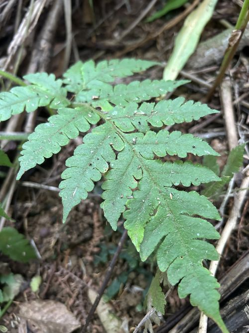

Lonchitidaceae
(No common name; often Lonchitis Family)
Lonchitidaceae is a small family of large terrestrial ferns in the order Polypodiales, containing the single genus Lonchitis. These ferns have stout, short-creeping or suberect rhizomes covered in conspicuous reddish-brown hairs (lacking scales). Their large, highly divided fronds bear marginal or submarginal sori located in the sinuses between lobes, protected by an outer indusial flap formed by the leaf margin and usually a less distinct inner flap. The family has a disjunct distribution in the Neotropics and tropical Africa/Madagascar.
Overview
Lonchitidaceae, represented by the genus Lonchitis, is another family positioned as an early diverging lineage within the Polypodiales order. These are substantial terrestrial ferns found in wet tropical forests, often favouring disturbed sites, forest edges, clearings, or stream banks.
They grow from stout rhizomes that are short-creeping to suberect and are characteristically covered in long, multicellular, reddish-brown hairs; true scales are absent. The fronds are large, broadly triangular, and highly divided (typically 3-pinnate-pinnatifid). A key feature for identification is the sorus structure: the sori are located at the margin, specifically within the sinuses (notches) between the ultimate lobes of the frond segments. They are protected by two flaps – an outer one formed by the modified leaf margin and an inner, often less conspicuous, true indusium.
The family contains only two currently recognized species, Lonchitis hirsuta and L. occidentalis, which have a disjunct distribution across the Neotropics and tropical Africa/Madagascar. This distribution pattern, along with its phylogenetic position, makes Lonchitidaceae important for studying fern evolution and biogeography.
Quick Facts
- Scientific Name: Lonchitidaceae
- Common Name: No common name; Lonchitis Family.
- Number of Genera: 1 (Lonchitis)
- Number of Species: 2
- Distribution: Disjunct: Neotropics; Tropical Africa & Madagascar.
- Key Features: Terrestrial, stout rhizome with hairs (no scales), large divided fronds, marginal sori in sinuses protected by inner/outer indusial flaps, homosporous.
- Evolutionary Group: Polypodiopsida (Leptosporangiate Ferns) - Polypodiales
Key Characteristics
Growth Form and Habit
Large terrestrial ferns with stout, short-creeping to suberect rhizomes. Rhizomes bear conspicuous hairs.
Fronds (Leaves)
Fronds arise from the rhizome apex, are large (up to 3 meters or more), and broadly triangular (deltate) in outline.
- Structure: Pinnately compound, typically 2-pinnate-pinnatifid to 4-pinnate.
- Texture: Herbaceous.
- Vernation: Young fronds show circinate vernation and are hairy.
- Petioles (Stipes): Stout, bearing hairs, especially at the base.
- Veins: Mostly free, but sometimes anastomosing (joining) near the margin, particularly approaching the sinuses where sori are located.
Fronds are generally monomorphic.
Indument
Rhizomes and petiole bases are covered in conspicuous, long, multicellular, reddish-brown hairs. Scales are absent.
Sori and Indusial Characters
Lonchitidaceae are homosporous. Spores are produced in sori located at the frond margin within sinuses.
- Sorus Position: Sori are marginal or submarginal, typically located within the sinuses (notches) between the ultimate lobes or teeth of the frond segments.
- Sorus Shape: Often somewhat elongate, following the curve of the sinus.
- Indusium: Sori are protected by two flaps: an outer indusial flap formed by the reflexed, modified leaf margin, and an inner indusial flap (a true indusium) which is often thinner and less conspicuous, sometimes rudimentary or absent.
- Receptacle: Sporangia are attached to a vascular commissure connecting vein endings within the sinus.
Spores
Spores are trilete, tetrahedral, and typically have a somewhat ridged or tuberculate surface.
Field Identification
Identifying Lonchitidaceae involves recognizing the large, hairy (not scaly) ferns with highly divided fronds and the characteristic sori located in the marginal sinuses.
Primary Identification Features
- Habit: Large terrestrial fern with a stout, hairy rhizome/base (no scales).
- Indument: Conspicuous reddish-brown hairs on rhizome and stipe bases.
- Sori Location: Sori situated within the sinuses (notches) between the ultimate lobes of the frond margin.
- Indusial Flaps: Sori protected by an outer flap (modified margin) and usually an inner flap (true indusium).
- Large, Divided Fronds: Fronds typically large and 2-4 times pinnate.
Common Confusion Points
- Dennstaedtiaceae (e.g., Hypolepis, Pteridium): Often large, hairy ferns with marginal or submarginal sori. However, their sori are typically protected differently (e.g., by only the reflexed margin, or a cup-shaped indusium not specifically in sinuses) and rhizomes are often long-creeping.
- Lindsaeaceae: Have marginal sori, but typically possess scales on the rhizome (not hairs) and have differently shaped indusia (opening outwards, not usually with distinct inner/outer flaps in the same way) and often different pinnule shapes.
- Pteridaceae: Many have marginal sori, often fused into lines, but typically lack a true inner indusium and often have scales or different hair types.
- Culcitaceae / Dicksoniaceae (Cyatheales): Also hairy with marginal sori protected by two flaps, but belong to a different order and usually have more robust (often tree-like) habits and different hair characteristics.
Field Guide Quick Reference
Look For (Lonchitis):
- Stout rhizome/base with hairs (no scales)
- Large (2-4 pinnate) fronds
- Sori located in marginal sinuses
- Sori with inner & outer indusial flaps
- Wet tropical forests (Neotropics/Africa)
Distinguish From:
- Dennstaedtiaceae (soral details, rhizome)
- Lindsaeaceae (scales, indusia)
- Pteridaceae (indusia, indument)
- Culcita/Dicksonia (habit, order)
Notable Examples
The family contains the single genus Lonchitis with two species.

Lonchitis
(No common name)
The sole genus, comprising L. hirsuta (widespread in Neotropics and Africa/Madagascar) and L. occidentalis (Neotropics). These large ferns are recognized by their hairy rhizomes and stipes, highly divided fronds, and marginal sori located in the sinuses between lobes, protected by inner and outer indusial flaps.
Phylogeny and Classification
Lonchitidaceae is placed within the order Polypodiales. It is considered another early diverging lineage within the order, branching off before the main radiation of eupolypod ferns. Its exact phylogenetic position has been somewhat uncertain; historically, it was sometimes associated with Dennstaedtiaceae due to the hairy indument, but molecular data place it separately, potentially near the Lindsaeaceae/Saccolomataceae/Cystodiaceae group, although relationships among these early branches are still being fully resolved.
Its combination of features (hairy indument like Dennstaedtiaceae, but marginal sori somewhat resembling Lindsaeaceae or Culcitaceae) highlights the complexity of early Polypodiales evolution. Its disjunct Neotropical and African distribution also points to an ancient origin.
Position in Plant Phylogeny
- Kingdom: Plantae
- Clade: Tracheophytes (Vascular plants)
- Class: Polypodiopsida (Leptosporangiate ferns)
- Order: Polypodiales
- Family: Lonchitidaceae
Evolutionary Significance
Lonchitidaceae is important for:
- Understanding Polypodiales Phylogeny: Helps clarify relationships among the early branching lineages of the largest fern order.
- Morphological Character Evolution: Illustrates combinations of traits (e.g., hairy indument with specific soral type) found in early Polypodiales lineages.
- Biogeography: Its Neotropical-African disjunction is a significant pattern reflecting past geological and climatic history.